長期トレンド
JKMとJEPXシステムプライスの推移グラフ
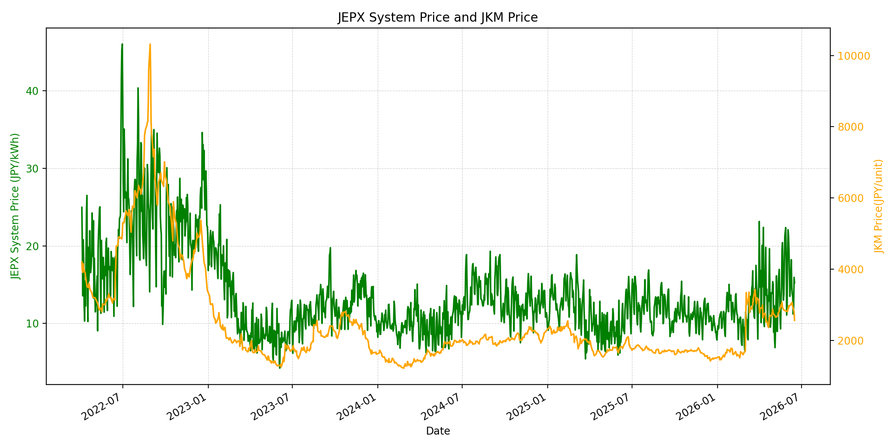
WTIの推移グラフ
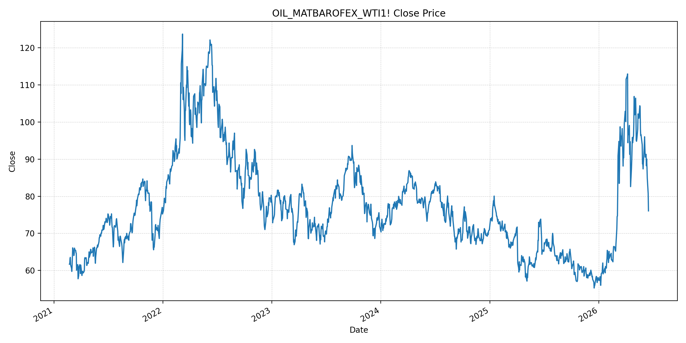
JEPXエリアプライスグラフ（直近一年分）
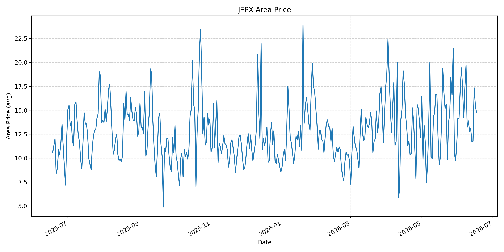
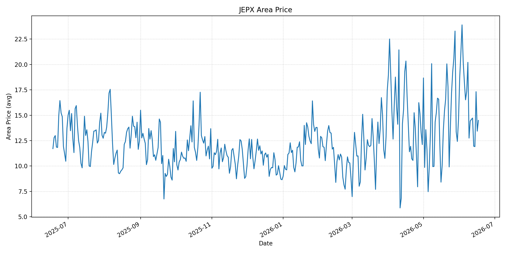
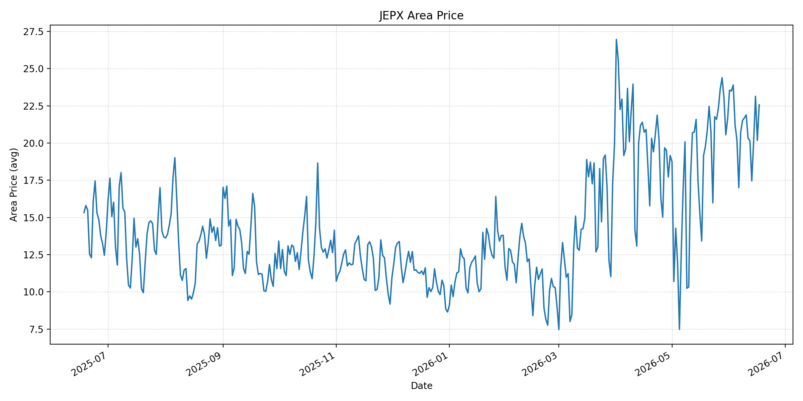
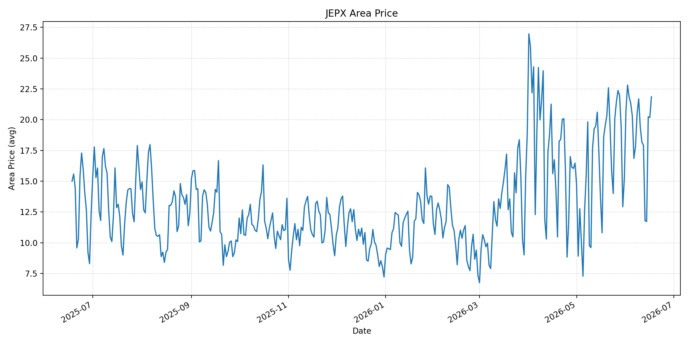
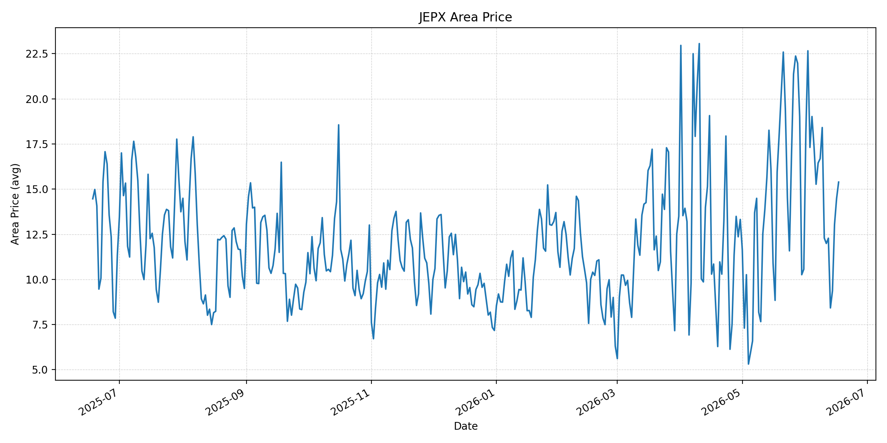
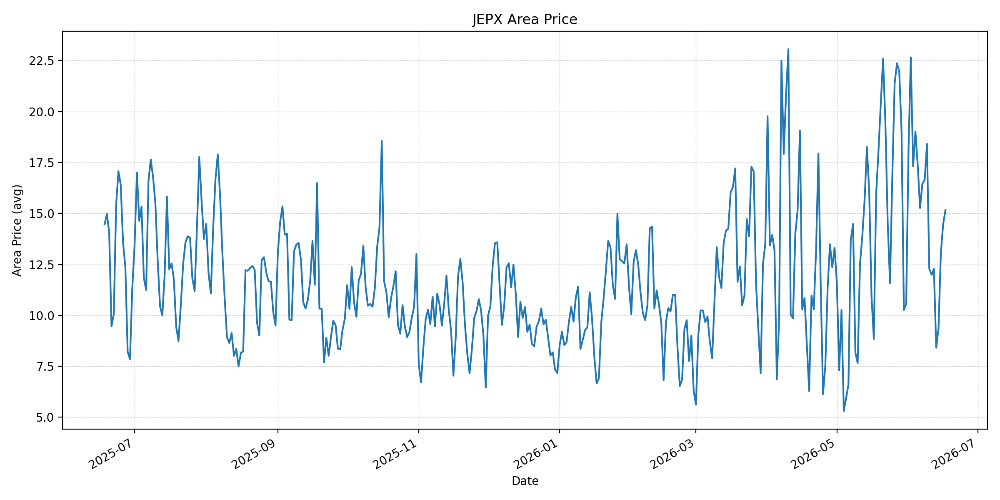
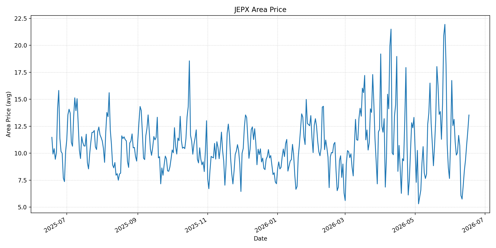
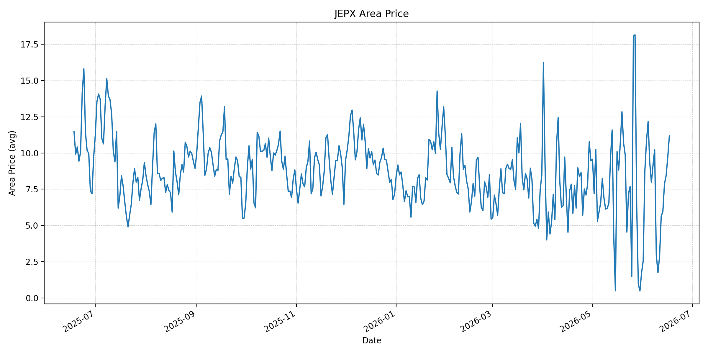
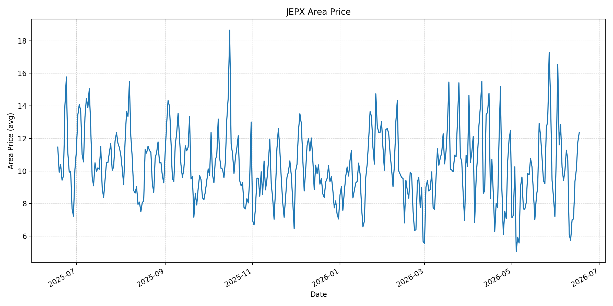
短期トレンド
JKMとJEPXシステムプライスの推移グラフ
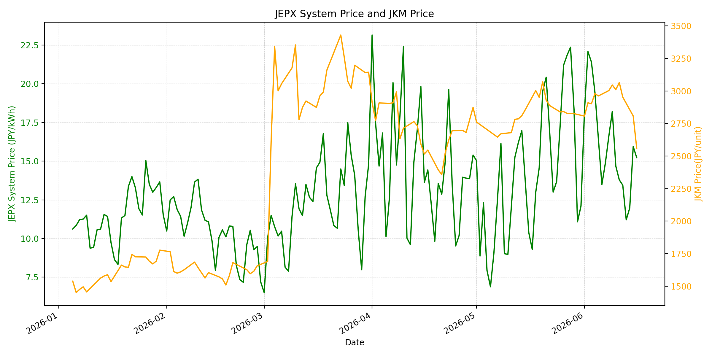
WTIの推移グラフ
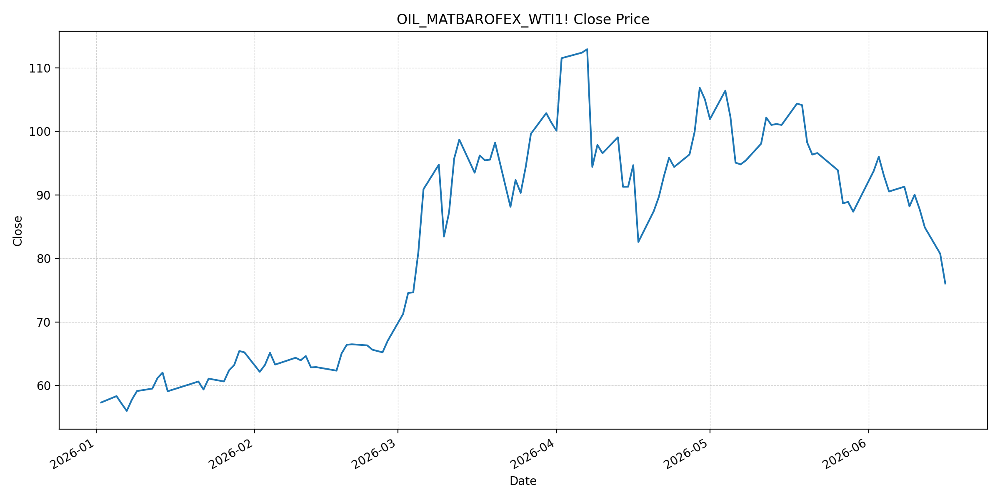
JEPXシステムプライス
JEPXは受渡日ベースの最新非空値で評価しています。最新値は 2026-06-17 分です。先週終値は 2026-06-10 時点の直近値、先月終値は 2026-05-31 時点の直近値で評価しています。
| エリア | 当日価格 | 前日価格 | 前日比（％） | 先週終値 | 先週比（％） | 先月終値 | 先月比（％） | 過去最高値 | 最高値比（％） |
|---|---|---|---|---|---|---|---|---|---|
| システム | 17.16 | 15.23 | 12.67 | 14.68 | 16.89 | 12.10 | 41.82 | 64.06 | -73.21 |
| 北海道 | 14.77 | 15.53 | -4.89 | 13.89 | 6.34 | 11.38 | 29.79 | 73.92 | -80.02 |
| 東北 | 14.49 | 13.43 | 7.89 | 14.42 | 0.49 | 14.64 | -1.02 | 84.92 | -82.94 |
| 東京 | 22.57 | 20.18 | 11.84 | 21.89 | 3.11 | 21.65 | 4.25 | 86.13 | -73.80 |
| 中部 | 21.86 | 20.18 | 8.33 | 19.38 | 12.80 | 15.25 | 43.34 | 52.06 | -58.01 |
| 北陸 | 15.39 | 14.47 | 6.36 | 12.29 | 25.22 | 10.56 | 45.74 | 46.48 | -66.89 |
| 関西 | 15.17 | 14.47 | 4.84 | 12.29 | 23.43 | 10.56 | 43.66 | 46.48 | -67.37 |
| 中国 | 13.54 | 12.06 | 12.27 | 6.08 | 122.70 | 7.66 | 76.76 | 46.48 | -70.87 |
| 四国 | 11.20 | 9.70 | 15.46 | 1.74 | 543.68 | 1.74 | 543.68 | 46.48 | -75.91 |
| 九州 | 12.37 | 11.78 | 5.01 | 6.08 | 103.45 | 7.20 | 71.81 | 40.54 | -69.49 |
LNG先物価格
最新値は 2026-06-16 の LNG(close) です。先週終値は 2026-06-09 時点の直近値、先月終値は 2026-05-29 時点の直近値で評価しています。
| 当日価格 | 前日価格 | 前日比（％） | 先週終値 | 先週比（％） | 先月終値 | 先月比（％） | 過去最高値 | 最高値比（％） |
|---|---|---|---|---|---|---|---|---|
| 2562.00 | 2808.00 | -8.76 | 3046.00 | -15.89 | 2826.00 | -9.34 | 10319.00 | -75.17 |
石油先物価格
最新値は 2026-06-16 の OIL(close) です。先週終値は 2026-06-09 時点の直近値、先月終値は 2026-05-29 時点の直近値で評価しています。
| 当日価格 | 前日価格 | 前日比（％） | 先週終値 | 先週比（％） | 先月終値 | 先月比（％） | 過去最高値 | 最高値比（％） |
|---|---|---|---|---|---|---|---|---|
| 76.05 | 80.75 | -5.82 | 88.20 | -13.78 | 87.36 | -12.95 | 123.70 | -38.52 |
ニュース
イラン情勢に関するニュース
- 2026年6月16日、APは、イラン外相が米国との暫定合意にはイスラエルのレバノン撤退が必要だと述べ、イスラエル側はこれを拒否していると報じました。合意文書は未公表で、当事者間の解釈差が正式署名前の主要リスクです。 参照: AP, 2026-06-16
- 同AP記事は、署名式が2026年6月19日にスイスで予定され、米側説明ではホルムズ海峡の即時開放と米海上封鎖解除が含まれるとしています。ただし、レバノン、核計画、制裁緩和の扱いはなお未確定です。 参照: AP, 2026-06-16
ホルムズ海峡経由の石油・LNGに関するニュース
- 2026年6月17日、Business Insiderは、米イラン合意後も原油市場の正常化には時間を要し、Brentは約81ドルでも戦争前を上回ると報じました。タンカー運航、保険、夏季需要、戦略備蓄補充が再上昇要因として残ります。 参照: Business Insider, 2026-06-17
- 2026年6月17日、Guardianは、原油が3カ月ぶり安値圏まで下落した一方、船会社の通航再開判断、保険料、損傷したエネルギーインフラの修復には時間がかかると報じました。秩序立った解決はなお保証されていません。 参照: The Guardian, 2026-06-17
ホルムズ海峡経由でない石油・LNGに関するニュース
- 過去24時間で、日本向けの非ホルムズ新規大型調達に関する強い追加報道は確認できませんでした。一方、APは2026年6月17日、IEAが東南アジアに対し、ホルムズ依存を踏まえたエネルギー源と輸送ルートの多様化を急ぐ必要があると警告したと報じています。 参照: AP, 2026-06-17
- 2026年6月17日、APは、イラン戦争終結後も燃料、肥料、航空、物流コストの低下は遅れ得ると報じました。非ホルムズの代替調達でも、燃料サーチャージや在庫・船腹制約は当面残る可能性があります。 参照: AP, 2026-06-17
日本国内のイラン戦争に関係するニュース
- 過去24時間で、JEPX制度や国内電力需給ルールを直接変更する日本政府の強い新規発表は確認できませんでした。直近では経済産業省が2026年5月20日に、今夏は全エリアで最低限必要な予備率3%を確保できるため節電要請は実施しないと発表しています。 参照: 経済産業省, 2026-05-20
- 直近報道では、Guardianが2026年6月15日に日本船主協会の説明として、ホルムズ海峡に日本関連船舶38隻が足止めされていると報じています。国内の追加制度変更は見えない一方、実物流の正常化確認は日本の燃料調達に重要です。 参照: The Guardian, 2026-06-15
インサイト
ニュース事項による日本の電力市場への影響（短期：数日〜1週間）
- JEPXシステムプライスは 17.16 円/kWhで前日比 12.67% 上昇しました。OILは 76.05、LNGは 2562.00 まで下落していますが、東京 22.57、中部 21.86 は高く、燃料安が直ちに東日本・中部の卸価格を抑える局面ではありません。
- 米イラン合意は短期の燃料心理を下げますが、APが報じるレバノン撤退条件の対立と、Guardianが指摘する保険・通航再開の遅れにより、数日から1週間はリスクプレミアムが再拡大し得ます。特に東京と中部の20円台継続は、燃料より地域需給の影響も強いと見ます。
- LNGは前日比 -8.76%、OILは前日比 -5.82% と大きく下げました。短期の火力限界費用には下押し材料ですが、四国、中国、九州は前週比が低い基準値から大きく上昇しており、エリアごとの需給変動には注意が必要です。
ニュース事項による日本の電力市場への影響（長期：1ヶ月〜半年）
- Business InsiderとGuardianはいずれも、合意後も石油・ガス供給の正常化には時間がかかる可能性を示しています。LNGは過去最高値比 -75.17%、OILは -38.52% と低位ですが、通航正常化、保険、備蓄補充が詰まると半年内に再び上振れし得ます。
- APが伝えたIEAの警告は、ホルムズ依存国にとって燃料源と輸送ルートの多様化が構造課題であることを示します。日本では節電要請が見送られていても、燃料調達ルートの偏りと夏季需要が重なる場合、JEPXの先月比 41.82% 上昇が長引くリスクがあります。
- 署名前の合意解釈差、イスラエルのレバノン対応、海峡内に残る日本関連船舶の扱いは、1ヶ月から半年の燃料調達リスクを左右します。燃料価格だけを見ると弱含みですが、東京・中部の高値と西日本の低基準からの急反発を合わせ、卸価格は下落一方向とは見ません。